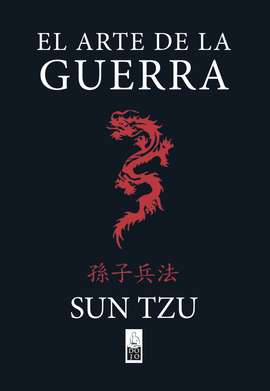

Sun Tzu escribió El arte de la guerra como un libro de práctica militar, pues él era general y la guerra era su vida y su que hacer diario. Pero, más allá de la práctica militar, lo pensó como un tratado que enseñara la estrategia suprema de aplicar con sabiduría el conocimiento de la naturaleza humana en los momentos de confrontación. Desde luego, las empresas no se enfrentan de forma directa en un campo de batalla como el que pisaba Sun Tzu, pero la dinámica competitiva empresarial lleva a que, en innumerables situaciones, las organizaciones se vean enfrascadas en un duelo a muerte del que solo puede salir vivo el vencedor.
Cuatro simples ideas confirman, desde diversos ángulos, la actualidad de Sun Tzu en el management actual. Por un lado, el general chino insiste en todo momento en la importancia de posicionarse en el terreno con garantías para la victoria en la guerra, un posicionamiento del que Michael Porter ha sido su gran heredero.
Por otra parte, el militar chino comienza su reflexión con un aviso previo. “La guerra es un engaño”, advierte; lo cual sitúa la contienda en el ámbito de las percepciones y la apariencia o imagen percibida. La influencia actual de la reputación y el marketing se basa, precisamente, en ese sutil juego de percepciones.
Asimismo, Sun Tzu destaca en todo momento en El arte de la guerra la importancia de la velocidad, agilidad y resiliencia como cualidades de los grandes generales y ejércitos para adaptarse lo antes posible a los cambios en el campo de batalla. Por último, entroniza, como fundamento del liderazgo la integridad y la prudencia, dos cualidades muy presentes en el momento actual como antídoto frente al riesgo y los desmanes financieros y de desgobierno de la última década.
La estrategia, el arte de competir, está en la cabeza en los grandes líderes empresariales de todo el mundo. Nadie escapa a ese arte que Sun Tzu definió desde el ámbito militar en forma de trece capítulos y que llegó a Europa de la mano de la traducción que realizó el jesuita Joseph-Marie Amiot, que había estado como misionero en China.
Han pasado ya más de dos mil años desde la publicación de El arte de la guerra, pero el alma guerrera y competitiva de sus máximas y sugerencias perviven de forma preclara en el ámbito empresarial, académico, deportivo, institucional, diplomático e incluso personal.
Opinion del libro

Bueno este libro habla de las distintas tacticas que tiene que saber un general estandar como el aprovechamiento del terreno de como tratar a tus soldados de como hay que luchar en las distintas situaciones de guerra de como mantener contacto con tus enemigos la verdad este libro me sorprendio porque las tacticas de guerra que penso un general chino en el año (aprox) 400 a.c les sirvieron a hitler a napoleon y a otros grandes generales de la gran historia de la guerra este libro transendio en los años como el mejor libro de estrategias militares que jamas haya existido ahora a continuacion les voy a citar una frase que fue extraida de su obra
"la victoria completa se produce cuando el ejercito no lucha,la ciudad no es asediada, la destruccion no se prolonga por mucho tiempo y en cada caso el enemigo es destruido por el empleo de la estrategia" muchas cosas que dice es que es mejor vencer al enemigo sin agredirlo como el decia "los que a hierro matan a hierro mueren" la verdad las frases que el escribio son fascinantes porque parecen pensadas por gente del siglo xxi bueno habla mucho de los terrenos de como aprovecharlos hay uno queme gusto en especial que se llama terreno mortal que el general debia decirle a los soldados que en esa batalla van a morir las cosas que dice de las virtudes de un general y de uno mismo para controlarse ante una situacion de peligro son fascinantes este libro la verdad es muy recomendado aunque no te quieras hacer general ni comandante ni nada